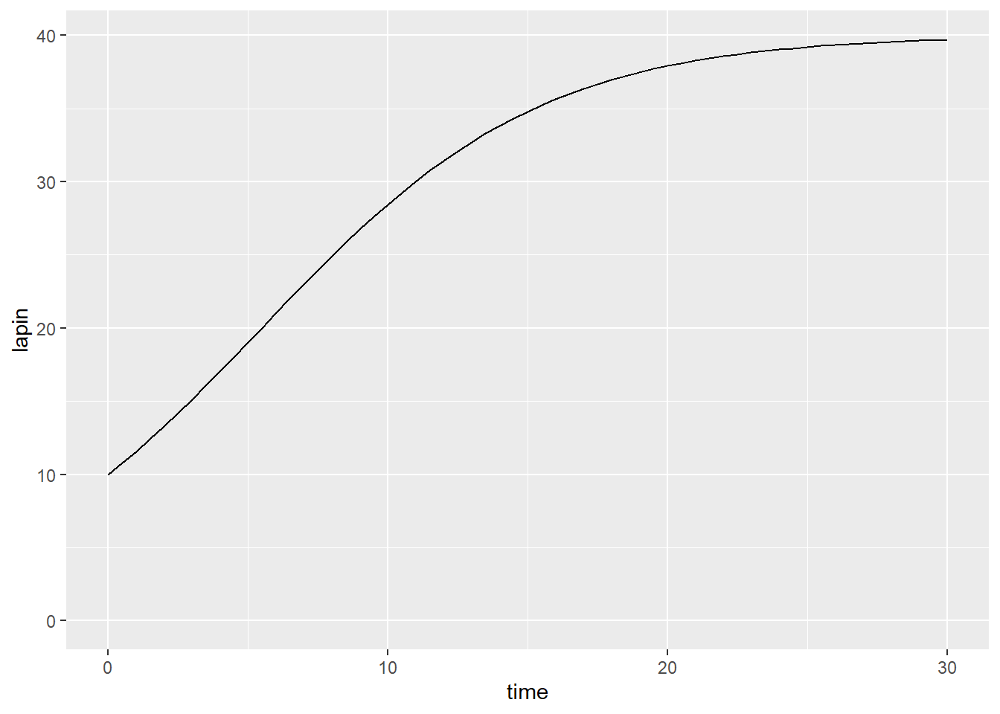
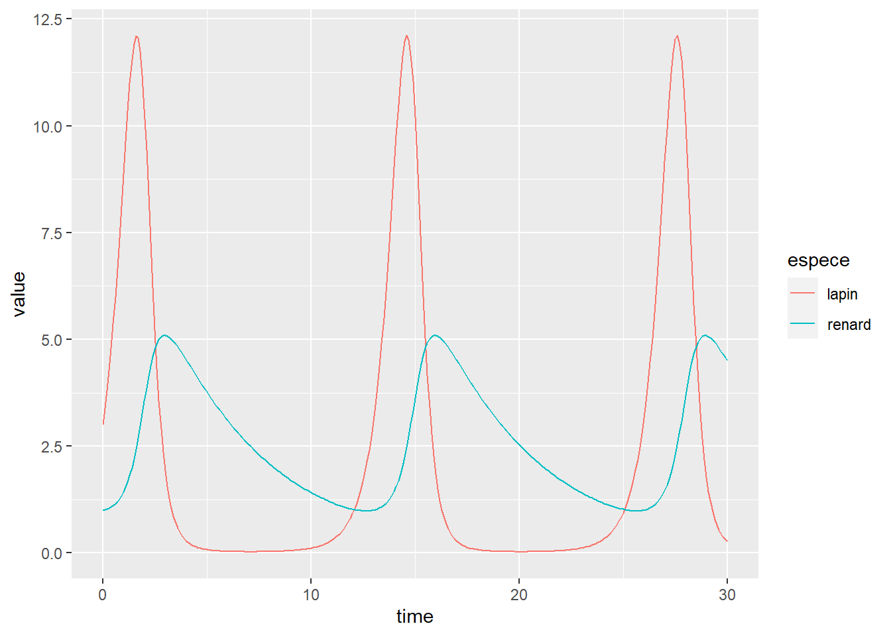
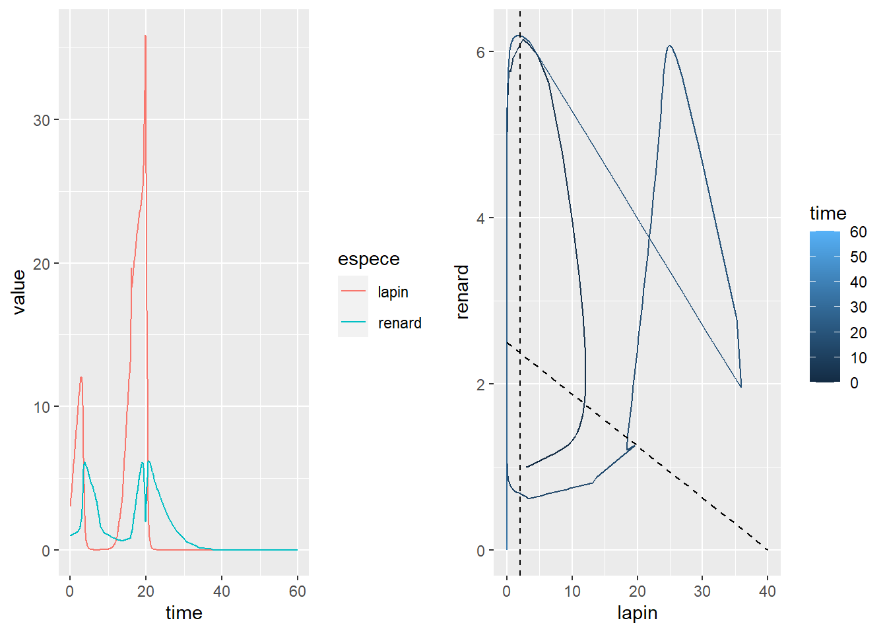

14 Modélisation de mécanismes écologiques
️ Objectifs spécifiques:
Ce chapitre est un extra. Il ne fait pas partie des objectifs du cours. Il ne sera pas évalué.
À la fin de ce chapitre, vous
- saurez définir une équation différentielle ordinaire et une équation différentielle partielle
- saurez aptes à détecter un problème impliquant le besoin d’utiliser des équations différentielles
- serez en mesure d’effectuer une modélisation impliquant un système d’ÉDO en contexte écologique
On se réfère à la modélisation mécanistique lorsque des principes théoriques guident une modélisation, à l’inverse de la modélisation phénoménologique, qui est guidée par les données. Il existe de nombreuses techniques de modélisation mécanistique, mais la plupart sont guidées par les équations différentielles.
14.1 Équations différentielles
Les équations différentielles permettent la résolution de problèmes impliquant des gradients dans le temps et dans l’espace. On les utilise pour modéliser la dynamique des populations, la thermodynamique, l’écoulement de l’eau dans les sols, le transport des solutés, etc. On en distingue deux grandes catégories: les équations différentielles ordinaires et partielles.
Équations différentielles ordinaires (ÉDO). Les équations différentielles ordinaires s’appliquent sur des fonctions s’appliquant à une seule variables, qui est souvent le temps. On pourra suivre, par exemple, l’évolution de la température en un point, en fonction du temps à partir d’une condition initiale. Parfois, plusieurs ÉDO sont utilisées conjointement pour créer un système d’ÉDO que l’on pourra nommé un système dynamique. Les solutions analytiques des ÉDO sont parfois relativement faciles à résoudre, mais les ordinateurs permettent des résolutions numériques en quelques lignes de code.
Équations différentielles partielles (ÉDP). Dans ce cas, ce sont plusieurs variables qui sont différenciées dans la même fonction. Il peut s’agir des coordonnées dans l’espace \([x, y, z]\) (régime permanent), qui peuvent aussi être appliqués à différents pas de temps (régime transitoire). Le problème sera délimité non pas seulement par des conditions initiales, mais aussi par des conditions aux frontières du modèle. Puisque que les solutions analytiques des EDP peuvent rarement être développées, on utilisera pratiquement toujours des approches numériques que sont principalement les méthodes de résolution par différences finies ou par éléments finis. La présente mouture de ce manuel ne comprend pas la résolution d’ÉDP.
14.2 Les équations différentielles ordinaires en modélisation écologique
L’évolution des populations dans le temps peut être abordée à l’aide de systèmes d’équations différentielles. Une simple équation décrivant la croissance d’une population peut être couplée à des schémas d’exploitation de cette population, que ce soit une exploitation forestière, une terre fourragère ou un territoire de chasse. On pourra aussi faire interagir des populations dans des schémas de relations biologiques. Ces processus peuvent être implémentés avec des processus aléatoires pour générer des schémas probabilistes. De plus, les biostatistiques et l’autoapprentissage peuvent être mis à contribution afin de calibrer les modèles.
14.2.1 Évolution d’une seule population en fonction du temps
La croissance d’une population (ou de sa densité) isolée en fonction du temps dépend des conditions qui lui offre son environnement. Dans le cas de la biomasse d’une culture à croissance constante, le taux de croissance est toujours le même.
\[ \frac{d 🌿 }{dt} = c \]
\[ \int_0^t c dt = \int_{🌿_0}^{🌿(t)} ~d🌿 \]
\[ ct = 🌿(t) - 🌿_0\]
\[ 🌿(t) = 🌿_0 + ct \]
library("tidyverse")
y0 <- 2
c <- 2 # exprimé en individu / pas de temps
time <- seq(0, 6, 0.1)
y <- y0 + c * time
tibble(time, y) %>%
ggplot(aes(x = time, y = y)) +
geom_line() +
geom_label(x = max(time), y = max(y), label = round(max(y))) +
expand_limits(y = 0)
Dans le cas d’une population qui se reproduit, une formulation simple modélise une évolution linéaire associée à un taux de natalité \(n\) et un taux de mortalité \(m\), où \(r = n-m\) est le taux de croissance de la population d’une population de lapins 🐰 en fonction du temps \(t\).
\[ \frac{d🐰}{dt} = n🐰 - m🐰 = r🐰 \]
\[ \int_0^t dt = \int_{🐰_0}^{🐰(t)} \frac{1}{r🐰} ~d🐰 \]
\[ t = \frac{1}{r} ln(🐰) \bigg\rvert_{🐰_0}^{🐰(t)} \]
\[ rt = ln \left( \frac{🐰(t)}{🐰_0} \right) \]
\[ 🐰(t) = 🐰_0 exp(rt) \]
La vitesse de croissance est constante pour une population constante, mais la croissance de la population est exponentielle étant donnée que chaque nouvel individu se reproduit.
y0 <- 10
r <- 0.2 # exprimé en individu / pas de temps
time <- seq(0, 10, 0.1)
y <- y0 * exp(r*time)
tibble(time, y) %>%
ggplot(aes(x = time, y = y)) +
geom_line() +
geom_label(x = max(time), y = max(y), label = round(max(y))) +
expand_limits(y = 0)
De 10 lapins au départ, nous en avons un peu plus de 75 après 10 ans… et près de 5 milliards après 100 ans! En fait, la capacité de support d’une population étant généralement limitée, on peut supposer que le taux de natalité décroit et que le taux de mortalité croit linéairement avec l’effectif.
\[ n(🐰) = \alpha - \beta 🐰 \] \[ m(🐰) = \gamma + \delta 🐰 \]
On aura donc
\[ \frac{d🐰}{dt} = 🐰 \left( \alpha - \beta 🐰 \right) - 🐰 \left( \gamma + \delta 🐰 \right) = r🐰 \left( 1 - \frac{🐰}{K} \right) \]
où \(r = \alpha - \gamma\) est l’ordonnée à l’origine du taux de croissance (théorique, lorsque la population est nulle) et \(K = \frac{\alpha-\gamma}{\beta + \delta}\) est la capacité limite du milieu de subsistance. On pourra s’aider d’un logiciel de calcul symbolique comme sympy ou maxima pour en tirer une solution analytique. Mais à ce point, nous utiliserons une approximation numérique. Nous utiliserons le module deSolve.
deSolve demande de définir les paramètres de l’ÉDO ou du système d’ÉDO. Nous devons d’abord spécifier à quels pas de temps notre ÉDO doit être approximée. J’étends la plage de temps à 30 ans pour bien visualiser la courbe de croissance.
Les conditions initiales du système d’ÉDO sont aussi définies dans un vecteur. La seule condition initiale de notre ÉDO est le nombre initial de lapin.
On définira les paramètres dans un vecteur p. Dans notre cas, nous avons \(r\), le taux de croissance à l’origine et \(K\), la capacité de support de l’écosystème. Il est préférable de nommer les paramètres du vecteur pour éviter les erreurs.
Enfin, une fonction définit l’ÉDO avec, comme entrées, les pas de temps, les conditions initiales et les paramètres. La sortie de la fonction est un vecteur des dérivées emboîtés dans une liste (lisez le fichier d’aide de la fonction ode pour les détails en lançant ?ode).
model_logistic <- function(t, y, p) {
lapin <- y[1]
dlapin_dt <- p[1] * lapin * (1 - lapin/p[2])
return(list(c(dlapin_dt)))
}Une fois que les pas de temps, les conditions initiales, les paramètres et le modèle sont définis, on les spécifie comme arguments dans la fonction ode. La sortie de la fonction ode est une matrice dont la première colonne comprend les pas de temps imposés, et les autres colonnes sont les dérivées spécifiées à la sortie de la fonction ode.
## time lapin
## [1,] 0.0 10.00000
## [2,] 0.5 10.76856
## [3,] 1.0 11.57342
## [4,] 1.5 12.41288
## [5,] 2.0 13.28478
## [6,] 2.5 14.18643
Exercice. Que ce passerait-il si le taux de croissance était négatif? Profitez-en pour changer les paramètres r et K.
Exercice. D’autres formulations existent pour exprimer des taux de croissance (Gompertz, Allee, etc.). En outre la formulation de Gompertz s’écrit comme suit.
\[ \frac{d🐰}{dt} = r🐰 \left( ln \frac{K}{🐰} \right) \]
Entrer cet ÉDO dans R avec deSolve.
14.2.2 Population exploitée
L’exploitation d’une population peut être effectuée de différentes manières. D’abord, le prélèvement peut être effectué de manière constante, par exemple dans un élevage ou par la chasse ou la cueillette. Ajoutons un prélèvement constant dans une courbe de croissance logistique.
\[ \frac{d🐰}{dt} = r🐰 \left( 1 - \frac{🐰}{K} \right) - Q \]
où \(Q\) est le quota, ou le prélèvement constant.
On pourra aussi effectuer un prélèvement proportionnel à la population.
\[ \frac{d🐰}{dt} = r🐰 \left( 1 - \frac{🐰}{K} \right) - E🐰 \]
où \(E\) est l’effort d’exploitation.
Ou bien effectuer une série de prélèvement ponctuels, comme la récolte de plantes fourragères.
\[ \frac{d🌿}{dt} = c - \left[ 🌿 - \gamma \right] \bigg\rvert_{t=a, b, c, d, e, ...} \]
où \(\gamma\) est le reste de la biomasse après la récolte et \(t=a, b, c, d, e, ...\) sont les pas de temps où le bloc entre les crochets est actif, c’est-à-dire la période de récolte. La solution analytique d’une culture à croissance constante est plutôt facile à déduire.
Les fonctions de prélèvement peuvent être modulées à votre guise.
Prenons pour l’exemple un prélèvement constant et une croissance logistique.
p <- c(r = 0.2, K = 40, Q = 1)
model_logistic_expl <- function(t, y, p) {
lapin <- y[1]
dlapin_dt <- p[1] * lapin * (1 - lapin/p[2]) - p[3]
return(list(c(dlapin_dt)))
}
lapin_t <- ode(y = y0, times = time, model_logistic_expl, p)
lapin_t %>%
as_tibble() %>%
ggplot(aes(x = time, y = lapin)) +
geom_line() +
expand_limits(y = 0)
Exercice. Modéliser avec un prélèvement proportionnel. Qu’arrive-t-il lorsque le prélèvement est trop élevé?
L’exploitation ponctuelle, comme la récolte ou l’administration d’une série de traitements, implique l’utilisation d’approches intermittentes. Bien que deSolve ignore les changements dans les variables d’état (y) tels que définis dans les dérivés, nous pouvons avoir recours à des évènements dans le jargon de deSolve. Ces évènements doivent être spécifiés dans un data.frame ou une liste. Il est difficile de trouver un exemple générique pour modéliser des évènements. Pour en savoir davantage, je vous invite donc à consulter la fiche d’aide ?events.
Dans notre cas, nous allons modéliser une récolte de plantes fourragères. La récolte est déclenchée lorsque le rendement atteint 2 t/ha, et laisser 0.3 t/ha au sol pour assurer le renouvellement pour les coupes subséquentes. Définissons d’abord les entrées du modèles.
Nous devons définir une fonction root (racine), comprenant tous les arguments de la fonction d’ÉDO, dont la sortie est une valeur qui déclenchera un évènement lorsque la valeur sera nulle. Dans notre cas, la valeur correspond simplement au rendement moins 2, la quantité au champ y[1]. Notez que d’autres stratégies peuvent être utilisées pour déclencher une récolte, par exemple le pourcentage de floraison qui demanderait des simulations plus poussées.
Puis, lorsque la fonction root est déclenchée, l’évènement ramène la quantité au champs à 0.3 t/ha, une quantité qui permet de relancer la croissance.
La fonction du modèle est telle qu’utilisée auparavant: une fonction logistique.
recolte <- function(t, y, p) {
champ <- y[1]
dchamp_dt <- p[1] * champ * (1 - champ/p[2])
return(list(c(dchamp_dt)))
}La fonction ode est lancée en entrant les fonction root et events.
out <- ode(times = time, y = y0, func = recolte, parms = p,
rootfun = recolte_root,
events = list(func = recolte_event, root = TRUE),
method="impAdams")
plot(out)
Nous pourrons organiser deux récoltes de 1.7 t/ha et une de 2 t/ha pour terminer la saison.
Exercice. Qu’adviendrait-il si vous laissiez 0.15 t/ha au champ au lieu de 0.3? Ou si vous laissiez 1 t/ha? Ou si vous déclenchiez une récolte à 2.3 t/ha?
Défi. Pouvez-vous modéliser l’ensilage?
14.2.3 Interactions biologiques
Les interactions biologiques entre deux espèces à un stade de croissance défini peuvent prendre différentes formes, du mutualisme (les deux espèces bénéficient de la relation) à la compétition (les deux espèces se nuisent) en passant par la prédation ou le parasitisme (une espèce bénéficie de l’autre en lui nuisant) ou le neutralisme (aucun effet). Ces effets sont décrits dans Pringle (2016) en un tableau synthèse.
Figure 14.1: Interactions biologiques, Pringle, E.G. 2016. Orienting the Interaction Compass: Resource Availability as a Major Driver of Context Dependence. Plos Biology. https://doi.org/10.1371/journal.pbio.2000891.
Ces interactions peuvent être décrite mathématiquement dans des systèmes d’ÉDO, ou ÉDO couplées. Le cas d’étude le plus courant reprend le système d’équation prédateur-proie de Lotka-Volterra, deux auteurs ayant développé de manière indépendante des équations similaires respectivement en 1925 et 1926.
Les équations de Lotka-Volterra supposent une croissance illimitée des deux espèces: les proies 🐰 se reproduisent par elles-mêmes (\(\alpha 🐰\)), tandis que les prédateurs 🦊 croissent selon la disponibilité des proies (\(\delta 🐰🦊\)). À l’inverse, la mortalité des proies dépend du nombre de prédateurs (\(- \beta 🐰🦊\)), mais la mortalité des prédateurs est indépendante des proies (\(- \gamma 🦊\)). On obtient ainsi un système d’équation.
\[\frac{d🐰}{dt} = \alpha 🐰 - \beta 🐰🦊 = 🐰 \left( \alpha - \beta 🦊 \right)\]
\[\frac{d🦊}{dt} = \delta 🐰🦊 - \gamma 🦊 = 🦊 \left( \delta 🐰 - \gamma \right) \]
À l’équilibre de 🐰, c’est-à-dire où \(\frac{d🐰}{dt} = 0\), on retrouve \(🐰=0\) ou \(🦊 = \frac{\alpha}{\beta}\). De même, à l’équilibre de 🦊, on retrouve \(🦊=0\) ou \(🐰 = \frac{\gamma}{\delta}\). En termes mathématiques, ces équilibre sont des isoclines, des points d’inflexion dans le système d’ÉDO.
Nous allons résoudre les équations de Lotka-Volterra avec deSolve. Rappelons-nous que nous devons définir des pas de temps où approximer les populations (times), des conditions initiales (y0) et des paramètres (p).
time <- seq(0, 30, by = 0.1)
y0 <- c(lapin = 3, renard = 1)
p <- c(alpha = 2, # taux de croissance des lapins (naissance - mortalité, 1/an)
beta = 0.8, # taux de prédation des lapins (renard / an)
delta = 0.1, # taux de conversion lors de la prédation (lapin / renard)
gamma = 0.2) # mortalité naturelle des renards (1/an)On peut calculer d’emblée les isoclines.
Nous devons ensuite créer notre modèle.
modele_LV <- function(t, y, p) {
lapin = y[1]
renard = y[2]
dlapin_dt = p[1] * lapin - p[2] * lapin * renard
drenard_dt = p[3] * lapin * renard - p[4] * renard
return(list(c(dlapin_dt, drenard_dt)))
}Lançons l’approximation.
## time lapin renard
## [1,] 0.0 3.000000 1.000000
## [2,] 0.1 3.380961 1.011940
## [3,] 0.2 3.806028 1.028156
## [4,] 0.3 4.278154 1.049326
## [5,] 0.4 4.799633 1.076263
## [6,] 0.5 5.371673 1.109943effectifs_t %>%
as_tibble() %>%
gather(key="espece", value = "value", -time) %>%
ggplot(aes(x=time, y=value)) +
geom_line(aes(colour=espece)) +
expand_limits(y = 0)
Lorsque la population de lapins croit, celle des renards croit à retardement jusqu’à ce que la population de lapin diminue jusqu’à être presque éteinte. Dans ces conditions, la population de renard ne peut plus être soutenue, et décroit, ce qui en retour donne l’opportunité de la population de lapins de resurgir.
effectifs_t %>%
as_tibble() %>%
ggplot(aes(x = lapin, y = renard)) +
geom_path() +
geom_hline(yintercept = lapin_iso, linetype = 2) +
geom_vline(xintercept = renard_iso, linetype = 2)
Les conditions initiales sont responsables de l’amplitude des cycles.
Excercice. Vérifier l’effet des paramètres sur les cycles.
Qu’adviendrait-il des populations si l’on prenait plutôt un profil de croissance logistique chez les lapins?
\[\frac{d🐰}{dt} = \alpha🐰 \left( 1-\frac{🐰}{K} \right) - \beta 🐰🦊 \]
\[\frac{d🦊}{dt} = \delta 🐰🦊 - \gamma 🦊 \]
Pour les isoclines, à l’équilibre où \(\frac{d🐰}{dt} = 0\), on retrouve \(🦊=\frac{\alpha}{\beta} \left( 1-\frac{🐰}{K} \right)\) ou \(🐰=0\). De même que précédemment, à l’équilibre de 🦊, on retrouve \(🦊=0\) ou \(🐰 = \frac{\gamma}{\delta}\).
Reprenons nos paramètres, mais en ajoutant la capacité de support des lapins, à \(K = 40\).
time <- seq(0, 60, by = 0.1)
y0 <- c(lapin = 3, renard = 1)
p <- c(alpha = 2, # taux de croissance des lapins (naissance - mortalité, 1/an)
beta = 0.8, # taux de prédation des lapins (renard / an)
delta = 0.1, # taux de conversion lors de la prédation (lapin / renard)
gamma = 0.2, # mortalité naturelle des renards (1/an)
K = 40) # capacité de support de l'écosystèmeCalculons les isoclines, en tenant compte que, cette fois-ci, l’isocline des renards est une fonction du nombre de lapins.
lapin_iso <- p[4] / p[3]
renard_iso <- tibble(lapin = seq(from = 0, to = 40, by = 1)) %>% # acec une séquence de lapins ...
mutate(renard = p[1] / p[2] * (1 - lapin/p[5])) # ... calculer les renardsLe modèle logistique diffère peu du modèle classique de Lotka-Volterra.
modele_LV_logist <- function(t, y, p) {
lapin = y[1]
renard = y[2]
dlapin_dt = p[1] * lapin * (1-y[1]/p[5]) - p[2] * lapin * renard
drenard_dt = p[3] * lapin * renard - p[4] * renard
return(list(c(dlapin_dt, drenard_dt)))
}Lançons la modélisation, puis affichons les résultats.
effectifs_t <- ode(y = y0, times = time, modele_LV_logist, p)
gg_time <- effectifs_t %>%
as_tibble() %>%
gather(key="espece", value = "value", -time) %>%
ggplot(aes(x=time, y=value)) +
geom_line(aes(colour=espece)) +
expand_limits(y = 0)
gg_cycle <- effectifs_t %>%
as_tibble() %>%
ggplot(aes(x = lapin, y = renard)) +
geom_path() +
geom_vline(xintercept = lapin_iso, linetype = 2) +
geom_line(data = renard_iso, linetype = 2) +
xlim(c(0, 10))
cowplot::plot_grid(gg_time, gg_cycle)
Ainsi conçu, le système tend vers des effectifs constants aux isoclines.
Dans les cycles étudiés jusqu’ici, les effectifs atteignent systématiquement un état critique, mais se recouvrent sans cesse. Il serait toutefois étonnant que les paramètres des équations (reproduction, mortalité, prédation, support des écosystèmes) soient constants. On peut admettre que les paramètres peuvent varier en fonction de d’autres paramètres, ou simplement au hasard. Justement, il est possible d’ajouter de la stochastique (processus aléatoire) dans nos fonctions. En outre, plusieurs simulations pourront nous indiquer un risque d’effondrement d’un écosystème.
Mais adviendra la possibilité que les effectifs des populations prennent des valeurs négatives, ce qui n’est pas admissible. Une solution est de reformuler nos équations pour faire en sorte de modéliser le logarithme des effectifs, qui pourront être recalculées par l’exponentielle dans la base du log. Un log négatif retransformé par l’exponentiel devient une fraction de 1 (si \(log_{10}(x) = -1\), \(x = 0.1\)). Une autre approche est d’utiliser un événement ramenant l’effectif négatif à zéro, déclanché lorsqu’un des effectifs est infrieur ou égal à zéro. C’est ce que nous allons faire, avec les mêmes time, y0 et p que précédemment.
La fonction root est un moyen de déclencher l’événement. Elle prend la valeur de zéro si l’un des deux effectifs est nul.
zero_root <- function(t, y, p) {
x1 <- y[1] >= 0
x2 <- y[2] >= 0
xnum <- as.numeric(x1 & x2)
return(xnum)
}
zero_event <- function(t, y, p) {
if (y[1] <= 0) y[1] <- 0
if (y[2] <= 0) y[2] <- 0
return(y)
}Reprenons la fonction logistique, mais en ajoutant un effet aléatoire à chacun des paramètres.
modele_LV_alea <- function(t, y, p) {
lapin = y[1]
renard = y[2]
alpha <- rnorm(1, p[1], 0.0005)
beta <- rnorm(1, p[2], 0.0005)
delta <- rnorm(1, p[3], 0.001)
gamma <- rnorm(1, p[4], 0.001)
K <- rnorm(1, p[5], 1)
dlapin_dt <- alpha * lapin * (1-lapin/K) - beta * lapin * renard
drenard_dt <- delta * lapin * renard - gamma * renard
return(list(c(dlapin_dt, drenard_dt)))
}La modélisation prend en compte l’événement.
set.seed(14389)
effectifs_t = ode(y = y0,
times = time,
func = modele_LV_alea,
parms = p,
rootfun = zero_root,
events = list(func = zero_event, root = TRUE),
method="impAdams")
effectifs_tibble <- effectifs_t %>% unclass() %>% as_tibble()On lance ensuite les mêmes fonctions de visualisation que précédemment.
gg_time <- effectifs_tibble %>%
gather(key="espece", value = "value", -time) %>%
ggplot(aes(x=time, y=value)) +
geom_line(aes(colour=espece)) +
expand_limits(y = 0)
gg_cycle <- effectifs_tibble %>%
ggplot(aes(x = lapin, y = renard)) +
geom_path(aes(colour = time)) +
geom_vline(xintercept = lapin_iso, linetype = 2) +
geom_line(data = renard_iso, linetype = 2) +
expand_limits(x = 0, y = 0)
cowplot::plot_grid(gg_time, gg_cycle)
Une très faible variance sur les paramètres peu grandement perturber le système. Il est possible, en effectuant plusieur simulations en boucle, d’évaluer le risque d’effondrement des effectifs d’une espèce, ce qui arrive pour le cas simulé pour les lapins, puis pour les renards.
Nous avons modélisé une relation biologique de prédation. Il existe dans la littérature une panoplie de modèles d’ÉDO pour décrire les relations biologiques, qui peuvent être modélisés entre plusieurs espèces pour créer des réseaux trophiques complexes. Toutefois, la difficulté de collecter des données en quantité et en qualité suffisante rendent ces modèles difficiles à appréhender.
Exercice. Modéliser une compétition interspécifique où chaque population croit de manière logistique.
\[\frac{d🐁}{dt} = r_1 🐁 \left( 1-\frac{🐁}{K_1} -\alpha \frac{🐀}{K_2} \right) \]
\[\frac{d🐀}{dt} = r_2 🐀 \left( 1-\frac{🐀}{K_2} -\beta \frac{🐁}{K_1} \right) \]
où \(r_1\) et \(r_2\) sont les taux de croissances respectifs des 🐁 et des 🐀, ainsi que \(K_1\) et que \(K_2\) sont les capacités de support des 🐁 et des 🐀. Le coefficient \(\alpha\) décrit l’ampleur de la compétition de 🐀 sur 🐁 et le coefficient \(\beta\) décrit l’ampleur de la compétition de 🐁 sur 🐀 (\(\alpha\) et \(\beta\) sont >= 0).
Exercice. Les interactions biologiques forment une bonne introduction aux systèmes d’équations différentielles ordinaires. On fait néanmoins souvent référence aux équations de Lorenz (1963), qui a développé un système d’ÉDO chaotique depuis trois équations,
\[ X' = aX + YZ, \] \[ Y' = b \left(Y-Z\right), \] \[ Z' = -XY + cY - Z, \]
où \(X\) est la température horizontale, \(Y\) est la température verticale, \(Z\) est le flux de chaleur convectif, et où l’on retrouve les paramètres \(a = -8/3\), \(b=-10\) et \(c=28\).
Résoudre les équations de Lorents avec deSolve. Porter graphiquement les relations entre X, Y et Z.